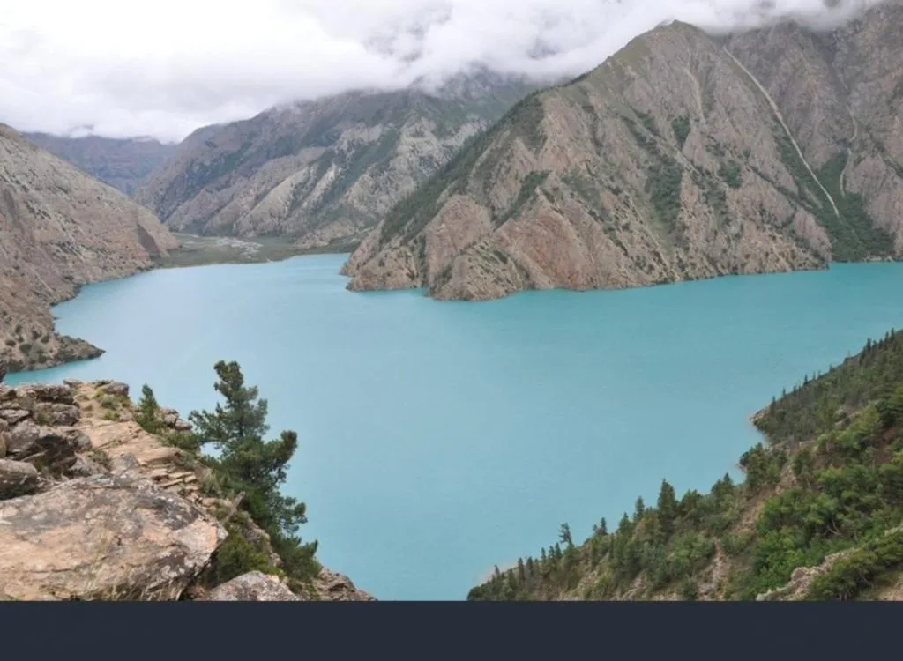
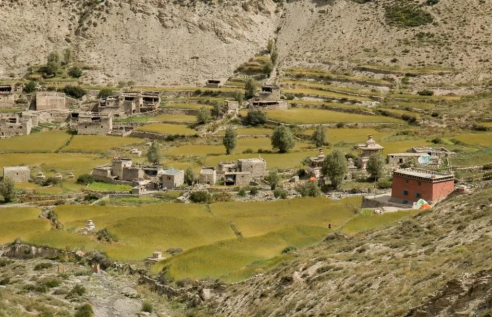
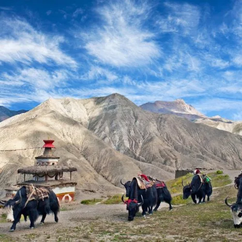
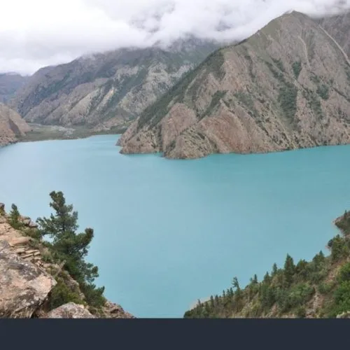
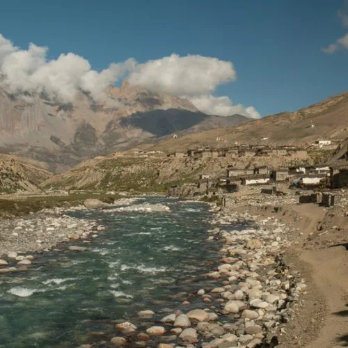

Dolpo Region Treks
Journey into the ultimate remote Tibetan plateau of Nepal. Explore crystal turquoise Shey Phoksundo Lake, ancient Shey Gompa, and ancient Bon religion villages.
Find the Right Dolpo Trek
Upper Dolpo TrekRemote 24-day expedition to Shey Gompa & Crystal Mountain
Shey Phoksundo LakeHike to Nepal’s deepest, most stunning turquoise lake
Lower Dolpo Circuit18-day trek through Tarap Valley & Numa La PassBon Culture TrailDiscover pre-Buddhist shamanic Bon Po heritageNuma La & Baga La PassHigh alpine pass crossings above 5,000mRestricted Permit InfoSpecial Upper & Lower Dolpo permit guidelines
Best Treks in the Dolpo Region
Compare Dolpo Treks
| Trek | Experience | Terrain | Highlights |
|---|---|---|---|
| Upper Dolpo | Wild Expedition | Strenuous | Shey Gompa, Crystal Mountain, Kang La (5,360m) |
| Lower Dolpo | High Pass Circuit | Challenging | Numa La (5,309m), Dho Tarap, Phoksundo |
| Shey Phoksundo Lake | Lake Scenic | Moderate | Deepest lake in Nepal (3,600m), Ringmo village |
Dolpo Trekking Routes
● Phoksundo Lake Route● Upper Dolpo Circuit● Numa La Pass Route
Choose Your Trek by Experience
Match your personal travel style, timeline, and physical goals.

True Wilderness Explorers
Remote Tibetan plateau with complete isolation.
Alpine Lake Admirers
Crystal blue Shey Phoksundo Lake at 3,600m.

Bon Religion Researchers
Pre-Buddhist ancient shamanic traditions.

Long-Distance Expeditioners
24-day wilderness camping expeditions.

High Pass Crossers
Cross Numa La (5,309m) and Kang La (5,360m).

Literary & Film Fans
Walk the paths of "The Snow Leopard" and "Himalaya".
Why Trek in Dolpo?
- Mesmerizing deep turquoise waters of Shey Phoksundo Lake
- Sacred Crystal Mountain (Shelri Gompa) spiritual pilgrimage site
- Ancient Bon Po shamanic religious practices and monasteries
- Remote pristine wilderness featured in Peter Matthiessen’s "The Snow Leopard"
- Dho Tarap — one of the highest human settlement valleys on Earth
- Pure alpine solitude with zero commercial crowds
Best Time to Trek
Spring (Mar–May)Excellent
Autumn (Sep–Nov)Excellent
Winter (Dec–Feb)Need 5-6 layers
Altitude & Safety
Max Altitude: 5,360m (Kang La).
Daily pulse oximeter monitoring by Sherpa guides and planned acclimatization days.
Frequently Asked Questions
How do I reach Dolpo?
You fly from Kathmandu to Nepalgunj, then take a mountain flight to Juphal airstrip in Dolpo.
Is camping required for Upper Dolpo?
Yes, full camping support with cooks and porters is mandatory for Upper Dolpo.
What is special about Shey Phoksundo Lake?
It is Nepal’s deepest lake (145m) with no aquatic life, giving it an otherworldly turquoise color.
Ready to Plan Your Dolpo Trek?
Get expert advice and a custom itinerary tailored for your next adventure.